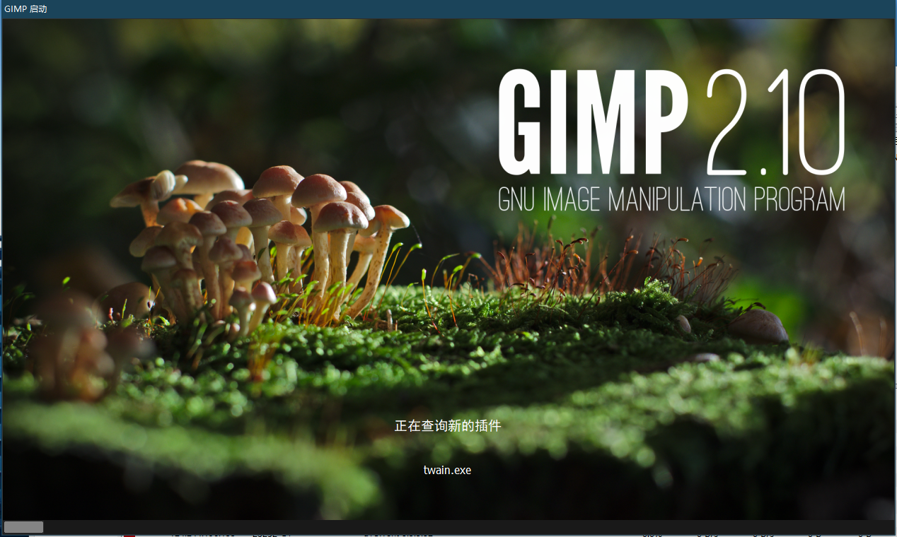
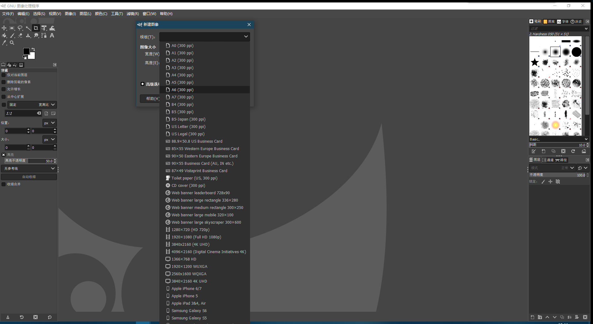
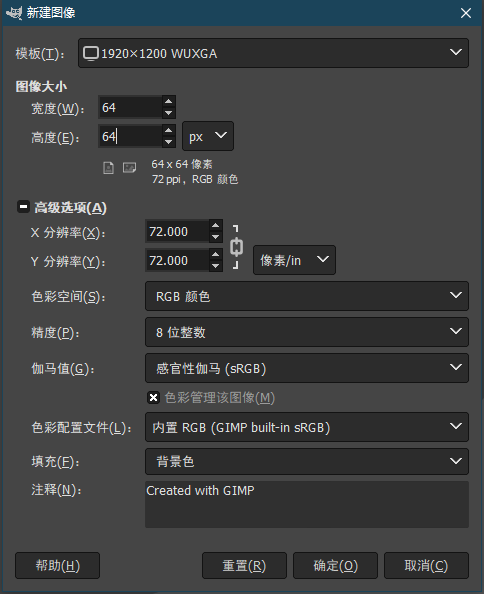
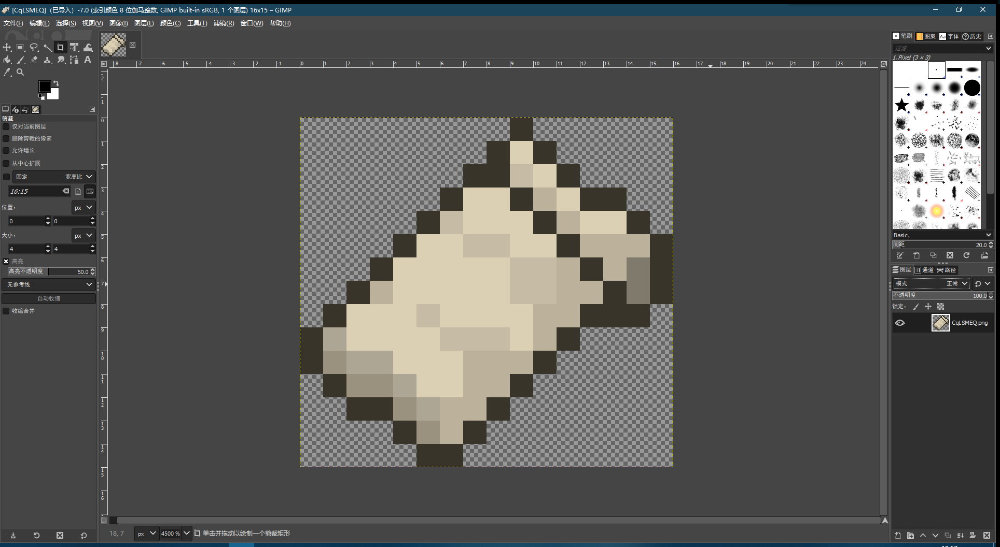
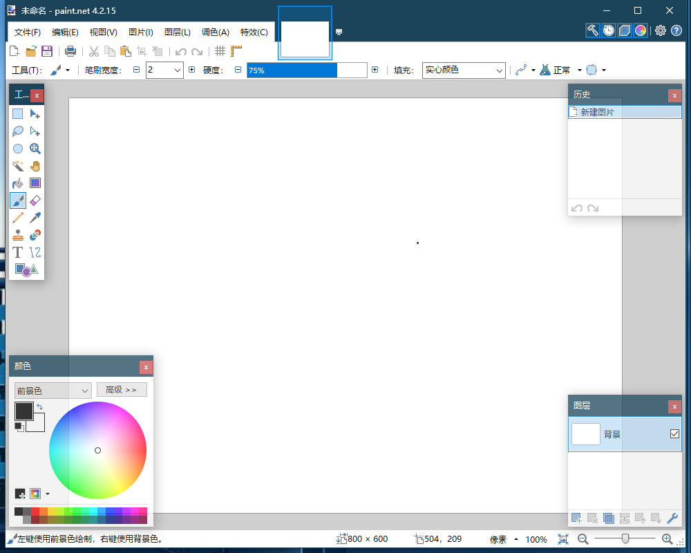
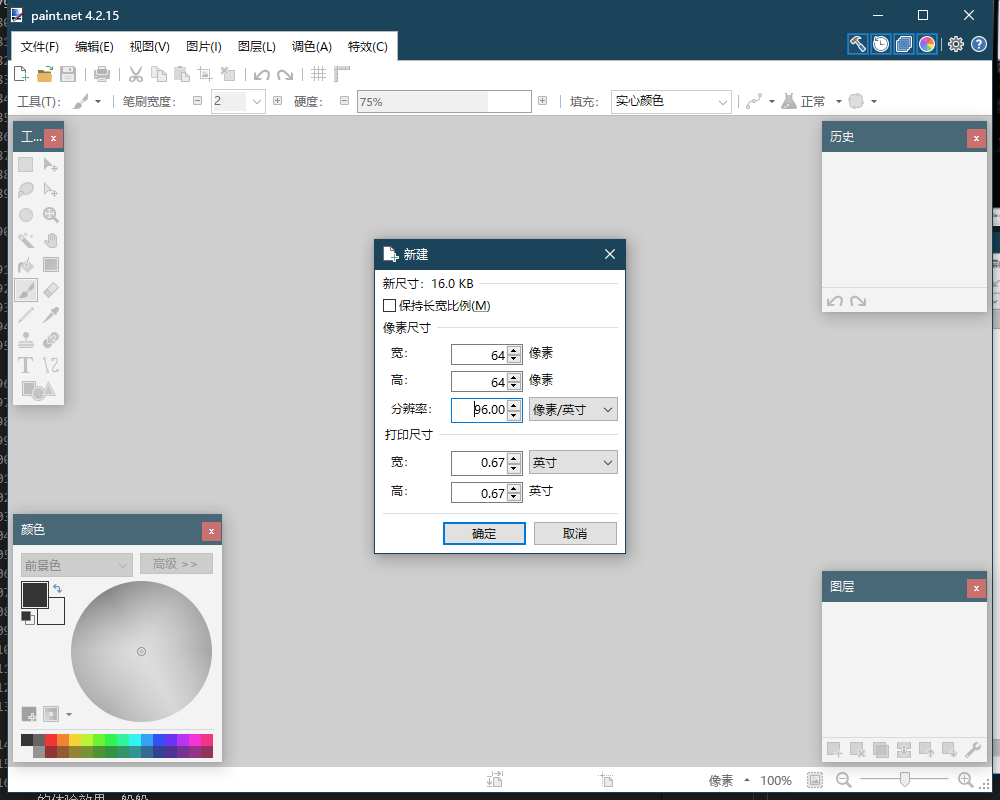
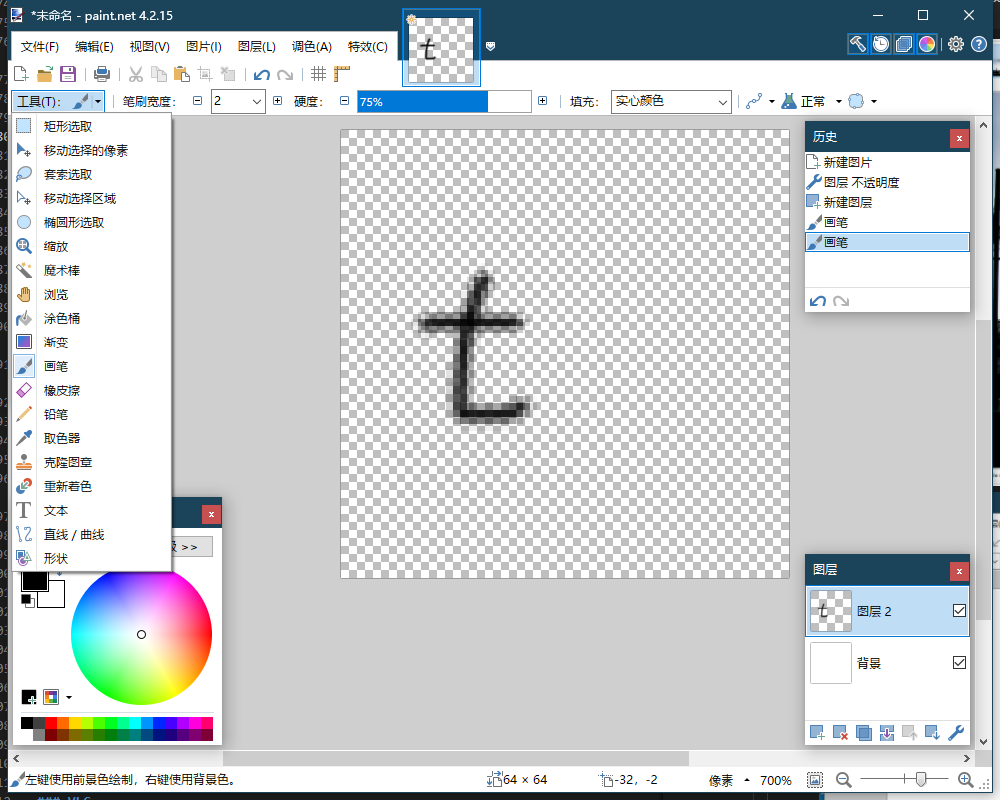

分享一些我觉得挺好用的工具。
生产工具
Visual Studio Code
项目官网: https://code.visualstudio.com/
正经好用的 vscode，谁用谁知道，比那个辣鸡的 Notepad++ 不知道高到哪里去了。

Windows Terminal
项目官网: https://docs.microsoft.com/zh-cn/windows/terminal/
微软开源的终端管理软件，用它来集中管理你的终端吧。
(Windows Server 系统好像不能用)
AnotherRedisDesktopManager
开源地址: https://github.com/qishibo/AnotherRedisDesktopManager
曾经有一个叫 RedisDesktopManager 的应用（简称 RDM ），它是一个跨平台的开源 Redis 管理工具，提供一个图形化用户界面来让开发人员（和运维）更直观的查看 Redis 内部存储。这个项目虽然是开源的，但它是一个商业项目。如果你想要使用它，要么掏钱，要么自己编译。
于是，国人开发的另一款 RDM 软件出现了: AnotherRedisDesktopManager
lss233 的 Maven 镜像
镜像网站: https://crystal.app.lss233.com/repositories/minecraft
lss233 搭建的 适用于 Minecraft 开发的 Maven 镜像，比仓鼠的 Maven 仓库不知道好到哪里去了。
lss233 是仓鼠的好朋友。
使用方式：
1 | <repositories> |
图像编辑类
GIMP
项目官网: https://www.gimp.org/
比较实用的图像编辑软件，它可以修改具有透明度的图像，画 Minecraft 材质包时非常有用。
该软件提供了插件支持，可以非常轻松地拓展应用功能。
下载安装包大概 230MB 左右，安装后大概 600MB 左右（如果安装 x86 兼容的话需要 800MB）。




Paint. NET
项目官网: https://www.getpaint.net/
同样支持插件系统的画图软件，但是使用起来比上面那个更简单。
直接在 Windows 商城下载安装需要 49 块钱。但该网站提供了免费版，即下载页面中 Windows 版本下面那个 dotPDN 下载点。




3D模型编辑类
Blockbench
项目官网: https://blockbench.net/
直接看官网介绍：
- Blockbench 是适用于 Minecraft 以及其他游戏和应用程序的多功能3D编辑器和动画制作器。
- Blockbench 带有强大的动画编辑器。动画随后可以导出到 Minecraft：基岩版，以及 Blender 和 Maya，或者在 Sketchfab 上分享。
- Blockbench 支持插件拓展，你可以随时实用第三方插件来拓展你自己的编辑器。
- Blockbench 支持共同编辑，你可以与你的朋友通过网络实时同步编辑同一个模型。
- Blockbench 支持 12 种不同的语言（也包括中文）。

音轨编辑类
Audacity
项目官网: https://www.audacityteam.org/
我对音效艺术了解不多，不过据说这款软件用来做 Minecraft 游戏的声效非常不错。

应用软件
播放器
VLC
项目官网: https://www.videolan.org/index.zh.html
GPL协议开源的视频播放器，有着不错的体验，但是界面不太美观。
该软件也支持 macOS、Linux、Android 等系统，其他系统我没有尝试过，但 Android 平台使用的体验效果一般般。
需要在安卓手机上使用 VLC 的可以去应用商店下载，一般直接搜索VLC或者VLC for Android即可。


PotPlayer
项目官网: https://potplayer.daum.net/?lang=zh_CN
老牌（虽然也不算老）影音播放器了，很多人都喜欢用这个软件。
但仓鼠本人并不太喜欢，Windows 下使用这个软件时偶尔会弹出更新提醒，点击下载更新时，若当前网络条件不稳定则会导致软件卡死。
该软件只有 Windows 版。
QQ影音
项目官网: https://player.qq.com/
腾讯出品，软件的用户体验直接拉满。毕竟国内还有谁能比腾讯更懂用户呢？
虽然是腾讯出品，但这款软件却并没有企鹅家其他产品那样的坑人功能，甚至连一个弹窗广告都没有。
该软件支持 Windows、macOS、Android（还在开发中）、iOS（还在开发中） 系统。如果你不关心什么编码解码之类的复杂问题，只想找一个既免费又好用还没有广告的视频播放器，什么都不用想，选它就对了。
解压软件
7ZIP
项目官网: https://sparanoid.com/lab/7z/
Windows 系统下最快、最好用且免费的解压软件。缺点就是界面太简单了，需要一些设置，不能开箱即用，对电脑小白不友好。
Bandizip
项目官网: http://www.bandisoft.com/bandizip/
Mac版: http://www.bandisoft.com/bandizip.mac/
曾经是我个人最喜爱的解压软件，轻便、快捷且界面美观。但是后来更新后软件内出现弹窗广告，所以不再使用了。

下载工具
qBittorrent
项目官网: https://www.qbittorrent.org/
开源地址: https://github.com/qbittorrent/qBittorrent
仓鼠最喜欢用的 BT 下载工具。放弃你的迅雷，加入我们 BitTorrent 社区吧！
BitTorrent 是一种内容分发协议，由布拉姆·科恩自主开发。
它允许用户在下载资源的同时向其他同样在下载该资源的用户分享自己已下载的资源，以此来保证每一个下载该资源的用户都能得到理想的下载速度。
当你通过一个磁力链接或者 BT 文件启动下载时，软件会自动询问 tracker 服务器， tracker 服务器会返回其他正在下载该资源的用户地址。然后 BT 下载工具会去与这些用户建立连接，并从他们那里获取文件内容。
当你下载完成一个文件片段时（通常每 3MB 会切割成一个片段），你就可以在下载其他片段的同时向其他用户共享你已下载的其他文件片段（会占用一定的上传速度），这样大家互帮互助，大家都能得到良好的下载体验。迅雷也支持 BT 协议下载，但是在你使用迅雷下载资源时，迅雷的客户端并不会共享资源给其他 BT 客户端，而只共享给其他迅雷用户。同时迅雷的服务器也会下载该资源，且不分享已下载内容给任何用户，只提供给开通了VIP的用户（即VIP高速下载通道）。
迅雷软件严重违反了互联网最根本的内涵精神 —— 自由、协作、平等和分享。
在大多数其他 BT 下载工具中，迅雷软件用户就是一个只进不出的黑洞，它只会从你的网络中拉取文件，占用你的上传速度，却一点资源的都不分享给你。也正因为如此，迅雷被圈内用户称之为吸血雷。
极其不推荐使用迅雷下载，现在许多 BT 客户端都自带了屏蔽迅雷软件（反吸血）的功能。

如上所述，BT 下载器需要联系到 tracker 服务器才能找到其他用户。如果找不到任何下载该资源（或拥有该资源）的用户，那么你的下载速度将永远是0！
这里推荐一个优质 tracker 服务器集合
项目官网：https://trackerslist.com/#/zh
精选列表：https://trackerslist.com/best_aria2.txt
完整列表：https://trackerslist.com/all_aria2.txt
在 qBittorrent 软件中，你可以按照以下步骤来设置自动添加 tracker 服务器。
工具 - 选项 - （弹出窗口的左侧列表）BitTorrent - （翻到最下面）勾选 自动添加以下 tracker 到新的 torrent - 将精选列表中（打开精选列表页面，按下ctrl + A 全选，再按下ctrl + C复制）的文本复制进下方的文本框中
在线工具
搜图
网站链接: http://www.iqdb.org/
非常好用的搜图网站，上传图片即可找到原图地址，该网站仅提供图像搜索与链接跳转功能，部分跳转的链接需要科学手段才能访问。
反应速度测试
网站链接: https://humanbenchmark.com/tests/reactiontime
测试你的反应速度。
gods-pen
项目官网: [https://godspen.ymm56.com/])(https://godspen.ymm56.com/)
开源地址: https://github.com/ymm-tech/gods-pen
码良是一个
在线生成 H5 页面并提供页面管理和页面编辑的平台，用于快速制作 H5 页面。用户无需掌握复杂的编程技术，通过简单拖拽、少量配置即可制作精美的页面，可用于营销场景下的页面制作。同时，也为开发者提供了完备的编程接入能力，通过脚本和组件的形式获得强大的组件行为和交互控制能力。
服务器软件
frp
开源地址: https://github.com/fatedier/frp
内网穿透工具。
这个工具没有图形用户界面，所以没有图片。
SAKURA FRP
项目官网: https://www.natfrp.com/
一个免费的 frp 服务器
懒得放图，因为我没用过。
nexus repository oss
项目官网: https://www.sonatype.com/products/repository-oss
世界第一的仓库管理器，支持 docker、Maven、npm、pypi、yum、apt、go 等常用仓库系统。
它安装快速、设置简单、使用方便。唯一的缺点就是它太吃内存了，官方宣称启动该应用至少需要4G内存。（仓鼠实测Linux系统下需要 2G 内存即可，但由于内存过少运行速度会严重下降）
图我就不放了，你可以打开 ProtocolLib 的 Maven 仓库 去体验一下 nexus 的界面。
reposilite
项目官网: https://reposilite.com/
开源地址: https://github.com/dzikoysk/reposilite
一个轻量的 Maven 仓库管理器，特点就是它真的非常非常非常轻量。
官方宣称只需要 12MB 内存即可启动，而搭建一个公共 Maven 仓库也只需要 48MB~128MB 内存。
如果你是一个 Java 程序员，而且想要拥有一个自己私人的 Maven 仓库，可以尝试一下使用它。
你可以打开 仓鼠的 Maven 仓库 来看看。

恰饭工具
物语云服务器
淘宝链接: 云服务器租用
最初 梦贩子 把物语云推荐给我时我是拒绝的……
好吧，现在我已经是物语云的淘宝客服了。但实际上我做这份兼职并没有收任何费用，梦贩子一开始提出要给我订单提成的时候被我拒绝了（因为物语云让我白嫖了一台他们的服务器，再收老板的钱太过意不去了）。
物语云出售的都是VPS服务器，真实服务器性能不超售。
当然你要是有钱的话也可以去租独立机，具体价格看淘宝。
如果你的钱实在多的没地方花，也可以自己买一台（或者找物语云定制一台）服务器，然后交给物语云这边丢进机房托管。
如果时间合适的话，你在淘宝上找客服也许就能碰到仓鼠。
1 | ===物语云计算 2021服务器托管-群内部价格=== |
（找老板报叁只仓鼠的名字，就可以拿到这个价格的托管费）
虽然说是恰饭，但仓鼠并没有收物语云一分钱广告费。


完
欢迎在底部留言分享其他好用的工具~